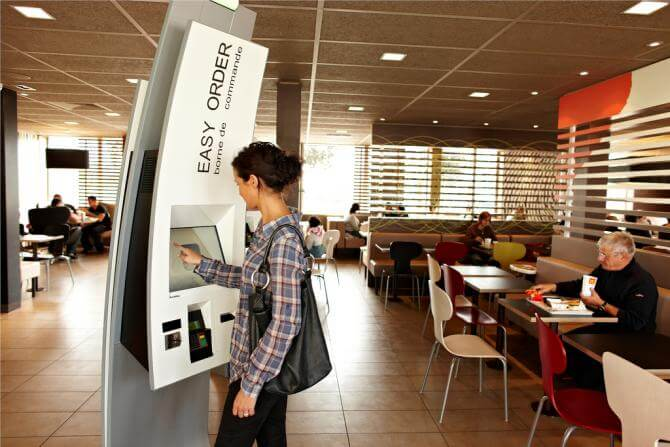
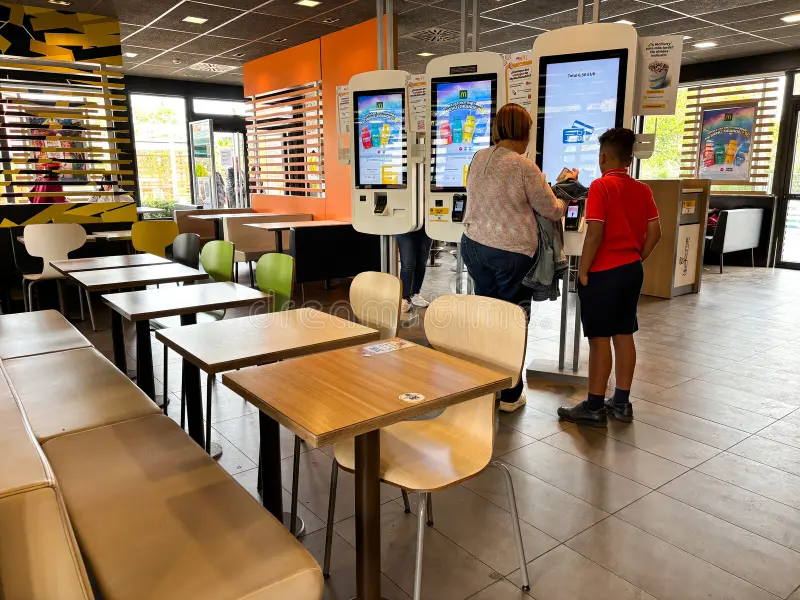

La tecnología esta transformando las cafeterías
Las nuevas tecnologías permiten que las cafeterías mejoren la atención al cliente y faciliten procesos como la consulta del menú y la realización de pedidos.
Leer másTecnología y experiencias para las cafeterías modernas
Este blog explora cómo la tecnología puede ayudar a las cafeterías a mejorar sus servicios y ofrecer una mejor experiencia a sus clientes.

Las nuevas tecnologías permiten que las cafeterías mejoren la atención al cliente y faciliten procesos como la consulta del menú y la realización de pedidos.
Leer más
Una aplicación móvil puede integrar el menú, los pedidos, las promociones y otras funciones para facilitar la integración entre la cafetería y sus clientes.
Leer más
La tecnología también puede utilizarse para crear experiencias más cómodas y personalizadas para los clientes de una cafetería.
Leer más